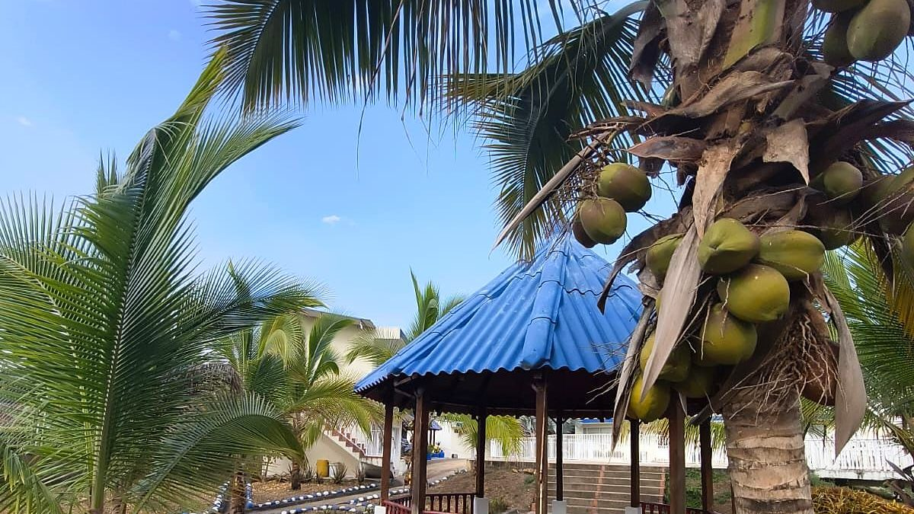

Festivos y puentes 2027 en Colombia: calendario completo y cómo aprovecharlos
2027 trae 19 festivos y 11 lunes de puente. Guarda este calendario, mira cuáles conviene reservar desde ya y arma tus escapadas al calor sin pelear con el tráfico.
Lectura de 7 minHotel Cabaleón
¿Cuántos festivos tiene 2027 en Colombia? Diecinueve. De ellos, once caen en lunes y forman puente, y la Semana Santa da cuatro días seguidos de descanso a finales de marzo. Aquí tienes el calendario completo, los puentes mes a mes y cómo aprovecharlos.
¿Cuántos festivos tiene 2027?
En 2027 Colombia tiene 19 días festivos. La mayoría se pasan al lunes siguiente por la Ley 51 de 1983, conocida como Ley Emiliani, y por eso hay tantos fines de semana largos.
La novedad es la Ley 2578 de 2026, que declaró el 9 de julio como festivo nacional en honor a la Virgen de Chiquinquirá. Como también se rige por la Ley Emiliani, en 2027 el descanso será el lunes 12 de julio. La ley tiene una demanda en la Corte Constitucional: si la Corte la anulara, 2027 quedaría con 18 festivos.
Calendario de festivos 2027 en Colombia
| Fecha | Día | Festivo | ¿Puente? |
|---|---|---|---|
| 1 de enero | Viernes | Año Nuevo | Sí, del viernes 1 al domingo 3 |
| 11 de enero | Lunes | Reyes Magos | Sí, del 9 al 11 |
| 22 de marzo | Lunes | San José | Sí, del 20 al 22 |
| 25 de marzo | Jueves | Jueves Santo | Sí, Semana Santa del 25 al 28 |
| 26 de marzo | Viernes | Viernes Santo | Sí, Semana Santa del 25 al 28 |
| 1 de mayo | Sábado | Día del Trabajo | No |
| 10 de mayo | Lunes | Ascensión del Señor | Sí, del 8 al 10 |
| 31 de mayo | Lunes | Corpus Christi | Sí, del 29 al 31 |
| 7 de junio | Lunes | Sagrado Corazón | Sí, del 5 al 7 |
| 5 de julio | Lunes | San Pedro y San Pablo | Sí, del 3 al 5 |
| 12 de julio | Lunes | Virgen de Chiquinquirá | Sí, del 10 al 12 |
| 20 de julio | Martes | Día de la Independencia | Solo si tomas libre el lunes 19 |
| 7 de agosto | Sábado | Batalla de Boyacá | No |
| 16 de agosto | Lunes | Asunción de la Virgen | Sí, del 14 al 16 |
| 18 de octubre | Lunes | Día de la Raza | Sí, del 16 al 18 |
| 1 de noviembre | Lunes | Todos los Santos | Sí, del sábado 30 de octubre al lunes 1 |
| 15 de noviembre | Lunes | Independencia de Cartagena | Sí, del 13 al 15 |
| 8 de diciembre | Miércoles | Inmaculada Concepción | No |
| 25 de diciembre | Sábado | Navidad | No |
Los puentes de 2027, mes a mes
- Enero: fin de semana largo de Año Nuevo (1 al 3) y puente de Reyes (9 al 11).
- Marzo: puente de San José (20 al 22) y Semana Santa (25 al 28). Dos escapadas en dos semanas.
- Mayo: puente de la Ascensión (8 al 10) y de Corpus Christi (29 al 31).
- Junio: puente del Sagrado Corazón (5 al 7).
- Julio: tres festivos. Puentes de San Pedro (3 al 5) y de la Virgen de Chiquinquirá (10 al 12), y el martes 20, Día de la Independencia.
- Agosto: puente de la Asunción (14 al 16). El 7 de agosto cae sábado.
- Octubre: puente del Día de la Raza (16 al 18).
- Noviembre: dos puentes seguidos, Todos los Santos (30 de octubre al 1 de noviembre) e Independencia de Cartagena (13 al 15).
- Diciembre: la Inmaculada Concepción cae miércoles y la Navidad, sábado.
Meses sin festivos en 2027
Febrero, abril y septiembre no tienen festivos. Son buenos meses para una escapada de fin de semana normal: hay menos tráfico en las salidas de Bogotá y más disponibilidad.
Semana Santa 2027
La Semana Santa de 2027 llega temprano: el Domingo de Ramos es el 21 de marzo, el Jueves Santo el 25, el Viernes Santo el 26 y el Domingo de Resurrección el 28 de marzo. Como el lunes 22 también es festivo (San José), marzo de 2027 tiene dos fines de semana largos casi seguidos.
Los puentes que quedan en 2026
| Fecha | Festivo | Fin de semana largo |
|---|---|---|
| Lunes 2 de noviembre | Todos los Santos | Del sábado 31 de octubre al lunes 2 |
| Lunes 16 de noviembre | Independencia de Cartagena | Del 14 al 16 |
| Martes 8 de diciembre | Inmaculada Concepción | Del 5 al 8 si tomas libre el lunes 7 |
| Viernes 25 de diciembre | Navidad | Del 25 al 27 |
Los puentes que conviene reservar desde ya
- Semana Santa (25 al 28 de marzo): cuatro días seguidos y una de las fechas con más viajeros del año.
- Los puentes de junio y julio: coinciden con la mitad del año y con el nuevo festivo de julio.
- Los dos puentes de noviembre: ideales para cerrar el año con descanso.
- El puente de Año Nuevo: si quieres empezar 2027 lejos del frío.
Cómo aprovechar un puente festivo cerca de Bogotá
- Elige un destino a dos o tres horas: así no gastas el puente en la carretera. Compara opciones en nuestra guía de pueblos de clima cálido cerca de Bogotá.
- Reserva con anticipación, directo con el alojamiento, para asegurar tu fecha y conocer el valor final.
- Sal temprano el sábado o evita el viernes en la tarde, cuando más se congestionan las salidas.
- Planea el regreso: el lunes festivo en la tarde es la hora más cargada para entrar a Bogotá. Regresa temprano o en la noche.
- Consulta el pico y placa regional, que Bogotá suele aplicar en el regreso de los puentes.
- Empaca para el clima con nuestra lista de qué llevar a clima cálido.
Un puente de tres días en Tena
| Día | Plan |
|---|---|
| Sábado | Salida temprano de Bogotá, almuerzo en Mangolé (12:30 a 3:00 p. m.), check-in desde las 3:00 p. m. y tarde de piscina. |
| Domingo | Desayuno incluido, sauna (10:00 a. m.) y jacuzzi (10:30 a. m.), y en la tarde mini tejo, billar o una caminata. |
| Lunes festivo | Mañana de naturaleza en Tena o de piscina, check-out hasta las 2:00 p. m. y zonas comunes hasta las 4:00 p. m. |
Mira todo lo que puedes hacer en la zona en nuestra guía de qué hacer en Tena y cómo es un fin de semana completo en Hotel Cabaleón.
Fuentes: Ley 51 de 1983 (Ley Emiliani), Ley 2578 de 2026 (Virgen de Chiquinquirá) y la fecha de Pascua de 2027 (28 de marzo). Fechas calculadas y verificadas el 12 de octubre de 2026 con la prensa nacional, por ejemplo RTVC Noticias.
Tu descanso comienza aquí
Elige fechas y habitaciones en nuestra página: ves tu factura al instante, con impuestos y desayuno incluidos, y confirmas con el anticipo del 50 % o el pago total. Directo con el hotel, sin intermediarios.
Preguntas frecuentes
¿Cuántos festivos hay en 2027 en Colombia?
Diecinueve, contando el nuevo festivo de la Virgen de Chiquinquirá (Ley 2578 de 2026), que en 2027 se celebra el lunes 12 de julio.
¿Cuántos puentes festivos tiene 2027?
Once lunes festivos, más la Semana Santa (del jueves 25 al domingo 28 de marzo) y el fin de semana largo de Año Nuevo, que cae viernes.
¿Cuál es el primer puente festivo de 2027?
El Año Nuevo cae viernes 1 de enero, así que el primer fin de semana largo va del 1 al 3 de enero. El primer lunes festivo es el 11 de enero, Día de los Reyes Magos.
¿Cuándo es Semana Santa 2027?
El Jueves Santo es el 25 de marzo y el Viernes Santo el 26 de marzo. El Domingo de Ramos es el 21 y el Domingo de Resurrección, el 28 de marzo.
¿Qué meses de 2027 no tienen festivos?
Febrero, abril y septiembre.
¿El 12 de julio de 2027 es festivo?
Sí. Es el día de descanso por la Virgen de Chiquinquirá (9 de julio), trasladado al lunes por la Ley Emiliani, salvo que la Corte Constitucional decida otra cosa sobre la Ley 2578 de 2026.
¿Qué puentes festivos quedan en 2026?
El lunes 2 de noviembre (Todos los Santos) y el lunes 16 de noviembre (Independencia de Cartagena). Además, el martes 8 de diciembre y el viernes 25 de diciembre son festivos.
Equipo de Hotel CabaleónComplejo turístico campestre en Tena, Cundinamarca. Publicado el .